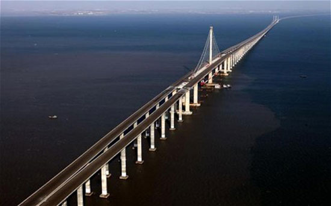

Jak sie buduje mosty

Budowa mostów to skomplikowany proces inżynieryjny, który wymaga precyzyjnych obliczeń, odpowiednich materiałów oraz właściwego projektowania. Mosty są zaprojektowane tak, aby przenosić obciążenia (takie jak ruch pieszy, samochodowy czy kolejowy) oraz opierać się siłom natury, takim jak wiatr czy woda. Poniżej znajdziesz szczegółowy opis głównych elementów konstrukcyjnych mostów:
ㅤ
ㅤ
1. Przyczółki (Abutments)
- Przyczółki to solidne, często betonowe lub kamienne struktury na krańcach mostu, które podtrzymują jego końce i przenoszą obciążenie na grunt. Są one odpowiedzialne za wsparcie mostu od jego początkowych i końcowych punktów.
- Dodatkowo, zapobiegają osuwaniu się mostu i zabezpieczają go przed wodą lub ziemią.
2. Filary (Piers)
- Filary to pionowe struktury umieszczone pod mostem, które wspierają przęsła na większych odległościach między przyczółkami. Filary są budowane, aby rozłożyć ciężar mostu i obciążeń na kilka punktów.
- Są kluczowe w przypadku mostów o dużych rozpiętościach, gdzie bezpośrednie wsparcie od końca do końca jest niemożliwe
3. Przęsła (Spans)
- Przęsło to część mostu między dwoma podporami (przyczółkami lub filarami). W zależności od długości mostu, może być jedno lub więcej przęseł.
- Główne przęsło mostu (największe) nazywane jest głównym przęsłem. Mosty o długich przęsłach są bardziej skomplikowane w budowie, wymagają dodatkowych obliczeń i technologii.
4. Nawierzchnia mostu (Deck)
- Nawierzchnia mostu to powierzchnia, po której poruszają się pojazdy, piesi lub pociągi. Może być wykonana z betonu, asfaltu, stali lub drewna, w zależności od przeznaczenia mostu i materiałów dostępnych w danym regionie.
- Nawierzchnia może być płaska (dla samochodów) lub mieć specjalne tory (dla pociągów).
5. Belki główne (Girders lub Beams)
- Belki główne to poziome elementy konstrukcyjne, które przenoszą obciążenie nawierzchni mostu na podpory. Są umieszczone równolegle pod nawierzchnią i mogą być wykonane ze stali, betonu sprężonego lub drewna.
- Belki te mogą mieć różne kształty, np. litery "I" (dwuteownik), co pozwala im być wytrzymałymi na duże obciążenia przy mniejszym zużyciu materiału.
6. Łuki (Arch)
- W mostach łukowych łuk jest głównym elementem konstrukcyjnym, który przenosi ciężar mostu na przyczółki. Łuk działa na zasadzie kompresji – siły z mostu są przekazywane w dół, na podpory.
- Mosty łukowe są jednymi z najstarszych form mostów, ponieważ były budowane już w czasach starożytnych.
7. Kable nośne (Suspension Cables)
- W mostach wiszących lub podwieszanych, kable nośne są kluczowymi elementami konstrukcji. W mostach wiszących kable są zawieszone na wysokich wieżach i podtrzymują nawierzchnię mostu poprzez pionowe liny.
- Mosty podwieszane mają kable biegnące bezpośrednio od wież do nawierzchni. Kable nośne są zwykle wykonane z wytrzymałej stali i przenoszą całe obciążenie mostu na wieże.
8. Wieże (Towers)
- Wieże to pionowe struktury, które w mostach wiszących i podwieszanych podtrzymują kable nośne. Są one najwyższymi elementami mostu i przenoszą obciążenie z kabli na fundamenty.
- Wieże muszą być wyjątkowo mocne, ponieważ przenoszą olbrzymie siły i obciążenia na konstrukcję mostu
9. Zbrojenie (Reinforcement)
- W mostach betonowych zbrojenie to stalowe pręty umieszczone w betonie, które zwiększają wytrzymałość konstrukcji na rozciąganie. Beton sam w sobie jest mocny w kompresji, ale słaby w rozciąganiu, dlatego zbrojenie stalowe poprawia jego właściwości.
- W mostach ze stali często używa się stali sprężonej, aby dodać dodatkową wytrzymałość.
10. Filar i fundament (Foundation)
- Fundament mostu to podstawa, na której opierają się filary i przyczółki. Musi być bardzo stabilny i często sięga głęboko pod powierzchnię ziemi lub dna rzeki, aby przenosić ciężar mostu na wytrzymałe warstwy gruntu.
- Fundament jest najważniejszym elementem dla stabilności całego mostu, ponieważ nieodpowiednie posadowienie może prowadzić do osunięcia się konstrukcji.